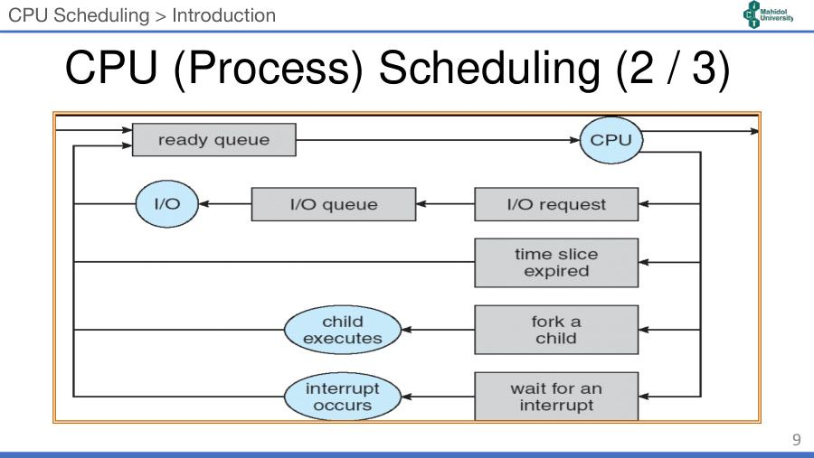
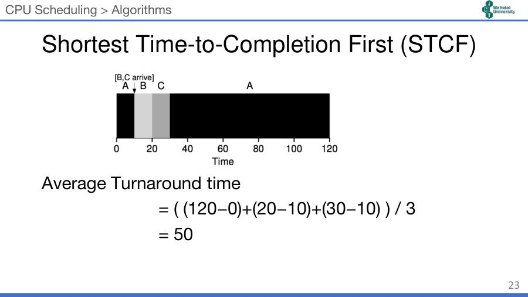
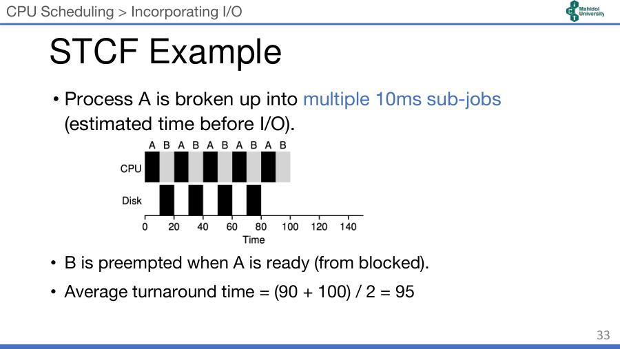
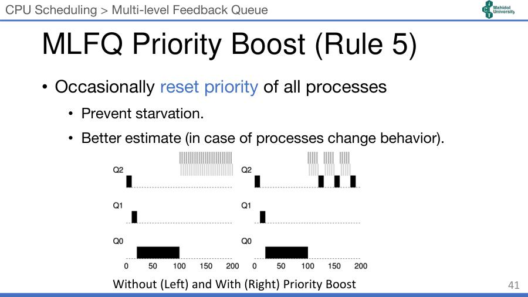

ภาพรวมบทนี้: (รศ.ดร.สุดสงวน งามสุริยโรจน์, sudsanguan.nga@mahidol.ac.th, 24 September 2026) ต่อจาก Lecture 2 ที่รู้ว่า OS สลับ process ได้อย่างไร บทนี้ตอบว่า ควรเลือก process ไหน มารันต่อ (scheduling policy)
เนื้อหา: CPU burst/I/O burst, เป้าหมายและ metrics (turnaround, waiting, response time), อัลกอริทึม FIFO, SJF, STCF, Priority, Round Robin, การรวม I/O, MLFQ (5 กฎ) และ scheduler ของ Linux (CFS) กับ Windows
บทนี้มีโจทย์คำนวณ turnaround/response time หลายข้อ — สรุปไว้ครบทุกตัวอย่างในสไลด์
1. Class Schedule (สไลด์ 2)
สไลด์นี้เป็นตารางเรียนฉบับปรับปรุง (แถวที่เปลี่ยนเป็นสีแดง)
Section 1
| Class | วัน | วันที่ | เวลา | ห้อง | Reason |
|---|---|---|---|---|---|
| OS#1 | พฤหัส | 3 ก.ย. | 10–12 น. | IT325 | Make up for Oct 6 |
| OS#2 | พฤหัส | 10 ก.ย. | 10–12 น. | IT325 | Make up for Oct 13 |
| OS#3 | พฤหัส | 24 ก.ย. | 10–12 น. | IT325 | Make up for Oct 20 |
| OS#4 | อังคาร | 27 ต.ค. | 9–11 น. | IT311 | เรียนปกติ |
| OS#5 | อังคาร | 10 พ.ย. | 9–11 น. | IT311 | เรียนปกติ |
| OS#6 | อังคาร | 17 พ.ย. | 9–11 น. | IT311 | เรียนปกติ |
| OS#7 | อังคาร | 24 พ.ย. | 10–12 น. | IT311 | Make up for Nov 3 |
Section 2
| Class | วัน | วันที่ | เวลา | ห้อง | Reason |
|---|---|---|---|---|---|
| OS#1 | พฤหัส | 3 ก.ย. | 14–16 น. | IT304 | Make up for Oct 8 |
| OS#2 | พฤหัส | 10 ก.ย. | 14–16 น. | IT304 | Make up for Oct 15 |
| OS#3 | พฤหัส | 24 ก.ย. | 14–16 น. | IT323 | Make up for Oct 22 |
| OS#4 | พฤหัส | 12 พ.ย. | 9–11 น. | IT324 | เรียนปกติ |
| OS#5 | พฤหัส | 12 พ.ย. | 14–16 น. | IT323 | Make up for Oct 29 |
| OS#6 | พฤหัส | 26 พ.ย. | 10–12 น. | IT323 | เรียนปกติ |
| OS#7 | พฤหัส | 26 พ.ย. | 14–16 น. | IT323 | Make up for Nov 5 |
⚠️ ตารางนี้ต่างจากที่อยู่ใน Lecture 1 (เช่น วันที่ OS#5–7 และห้องของ Section 2) — ให้ยึดฉบับล่าสุดนี้
2. Introduction (สไลด์ 3–7)
2.1 Outline (สไลด์ 3)
Introduction to Scheduling • Scheduling algorithms (FIFO, SJF, STCF, Priority, Round Robin) • Incorporating I/O • Multi-level Feedback Queue • Example of Scheduling
2.2 Maximizing CPU Utilization (สไลด์ 5)
- การทำงานของ process เป็นวงจรของ CPU burst และ I/O burst สลับกัน (เช่น load/store/add = CPU burst, read from file → wait for I/O = I/O burst)
- ระหว่าง I/O burst CPU ว่าง → BAD
- OS สลับไปให้ process อื่นที่ต้องใช้ CPU → GOOD
2.3 CPU-bound vs I/O-bound (สไลด์ 6)
| CPU-bound process | I/O-bound process | |
|---|---|---|
| ใช้เวลาส่วนใหญ่กับ | การคำนวณ | I/O |
| CPU bursts | น้อยครั้ง แต่ยาวมาก | หลายครั้ง แต่สั้น |
2.4 Multiprogramming (สไลด์ 7)
เพื่อสร้างภาพลวงว่ามี CPU (เสมือน) หลายตัว OS สลับ process โดย:
- Descheduling process ที่กำลังรันออกจาก CPU
- Scheduling process อื่นที่ ready เข้า CPU (ภาพ process states: Running ⇄ Ready, Running → Blocked ด้วย I/O initiate, Blocked → Ready ด้วย I/O done)
3. CPU (Process) Scheduling (สไลด์ 8–10)
3.1 เหตุการณ์ที่ OS ต้องเลือก process ถัดไป (สไลด์ 8)
- process yields
- process ถูก block (โดย I/O)
- process สร้าง child แล้วรอ child จบ
- process จบ (terminated)
- process ถูกขัดโดย timer interrupt
3.2 Scheduling queues (สไลด์ 9)
ภาพ: process อยู่ใน ready queue → ได้ CPU → ออกจาก CPU ได้หลายทาง:
- I/O request → I/O queue → I/O → กลับ ready queue
- time slice expired → กลับ ready queue
- fork a child → child executes → กลับ ready queue
- wait for an interrupt → interrupt occurs → กลับ ready queue

3.3 Scheduling policy (สไลด์ 10)
ในเหตุการณ์เหล่านี้ OS ใช้ scheduling policy เลือก process ถัดไป — คำถามที่ตามมา:
- อัลกอริทึมพื้นฐานของ scheduling policy มีอะไรบ้าง?
- ควรใช้ metrics อะไรเปรียบเทียบอัลกอริทึม?
4. Goals และ Metrics (สไลด์ 11–15)
4.1 Goal of Scheduling (สไลด์ 11–12)
| ระบบ | เป้าหมาย |
|---|---|
| All systems | Fairness — ให้แต่ละ process ได้ CPU อย่างยุติธรรม • Policy enforcement — ทำตาม policy • Balance — ทุกส่วนของระบบไม่ว่าง |
| Batch systems | Throughput — jobs ต่อชั่วโมงมากที่สุด • Turnaround time — เวลาตั้งแต่ส่งงานถึงจบน้อยที่สุด • CPU utilization — CPU ทำงานตลอด |
| Interactive systems | Response time — ตอบสนองเร็ว • Proportionality — ตรงกับความคาดหวังของผู้ใช้ |
| Real-time systems | Meeting deadlines — ไม่เสียข้อมูล • Predictability — คุณภาพไม่ลดลง |
4.2 Scheduling Metrics (สไลด์ 13)
| Metric | ความหมาย |
|---|---|
| CPU utilization | เวลาที่ CPU ทำงาน |
| Throughput | จำนวน process ที่ทำงานเสร็จต่อหน่วยเวลา |
| Turnaround time | เวลาที่ใช้ทำ process หนึ่ง — Turnaround time = CPU time + waiting time |
| Waiting time | เวลาที่ process รออยู่ใน ready queue |
| Response time | เวลาตั้งแต่ส่ง request จนได้ การตอบสนองครั้งแรก (first run) ไม่ใช่ output ทั้งหมด |
Turnaround time = เวลาเสร็จ − เวลามาถึง = CPU time + waiting time
Response time = เวลาที่ได้รันครั้งแรก − เวลามาถึง
4.3 Examples (สไลด์ 14)
สมมติทุก process มาถึง T = 0:
- P1 waiting time = 0, turnaround time = 24
- P2 waiting time = 24, turnaround time = 27
- P3 waiting time = ….., turnaround time = ? (สไลด์ทิ้งไว้เป็นคำถาม)
⚠️ สไลด์ไม่ได้ให้ burst time ของ P3 จึงหาคำตอบจากสไลด์ไม่ได้ — จากตัวเลขที่ให้ อนุมานได้แค่ว่า P1 ใช้ 24 และ P2 ใช้ 3 (27 − 24); P3 จะมี waiting time = 27
4.4 Good Scheduling Algorithms (สไลด์ 15)
- Max CPU utilization
- Max throughput
- Min turnaround time
- Min waiting time
- Min response time
5. Scheduling Algorithms และ FIFO (สไลด์ 16–19)
อัลกอริทึมที่เรียน (สไลด์ 17): FIFO • SJF • STCF • Priority • Round Robin (RR) • Multi-level Feedback Queue (MLFQ)
5.1 FIFO — First In, First Out (สไลด์ 18)
- บางครั้งเรียกว่า FCFS (First Come, First Served)
- A, B, C มาถึง T = 0 ใช้เวลาตัวละ 10s → รัน A(0–10), B(10–20), C(20–30)
- Average Turnaround Time = (10 + 20 + 30) / 3 = 20
5.2 Why FIFO is not great (สไลด์ 19)
- A ใช้ 100s, B และ C ใช้แค่ 10s → A(0–100), B(100–110), C(110–120)
- Average Turnaround Time = (100 + 110 + 120) / 3 = 110
- เรียกว่า Convoy Effect: process สั้นต่อคิวหลัง process ยาว (เหมือนคิวจ่ายเงินในซูเปอร์มาร์เก็ต)
6. SJF — Shortest Job First (สไลด์ 20–22)
6.1 SJF (สไลด์ 20)
- A, B, C มาถึง T = 0 — A ใช้ 100s, B และ C ใช้ 10s
- รัน งานสั้นก่อน: B(0–10), C(10–20), A(20–120)
- Average Turnaround Time = (10 + 20 + 120) / 3 = 50
6.2 SJF: Late Arrival (สไลด์ 21)
- ถ้า B และ C มาถึง T = 10 → A เริ่มไปแล้ว ต้องรอ A จบ: A(0–100), B(100–110), C(110–120)
- Average turnaround time = (100 + (110−10) + (120−10)) / 3 = 103.3
- แก้ปัญหานี้ได้ด้วยการ preempt process ที่กำลังรัน
6.3 Non-preemptive vs Preemptive (สไลด์ 22)
| Non-preemptive | Preemptive | |
|---|---|---|
| ความหมาย | process ที่ได้ CPU ถือไว้จน ปล่อยเอง (จบ หรือเปลี่ยนเป็น waiting) | process ที่รันอยู่ ถูกแย่ง CPU ได้ โดย process อื่น หรือ event เช่น clock หรือ process ที่ priority สูงกว่ามา |
| ตัวอย่างในสไลด์ | FIFO และ SJF | (STCF, RR ในหัวข้อถัดไป) |
7. STCF — Shortest Time-to-Completion First (สไลด์ 23)
(SJF แบบ preemptive) — กรณีเดียวกับ late arrival: A ใช้ 100s มาที่ T = 0, B และ C ใช้ 10s มาที่ T = 10
- A(0–10) → B, C มาถึง → preempt A → B(10–20), C(20–30) → A ต่อ (30–120)
- Average Turnaround time = ((120−0) + (20−10) + (30−10)) / 3 = 50

💡 เทียบ SJF late arrival 103.3 → STCF 50 เพราะ preempt ได้
8. Priority (สไลด์ 24–25)
8.1 หลักการ (สไลด์ 24)
- แทนที่จะใช้ burst time ใช้ priority ของ process ในการ schedule
- ตัวเลขน้อย → priority สูง
- อาจทำให้ process priority ต่ำเกิด starvation (ไม่ได้รันเลย)
8.2 ตัวอย่าง (สไลด์ 25)
ทุก process มาถึง T = 0
| Process | Burst Time | Priority |
|---|---|---|
| P1 | 10 | 3 |
| P2 | 1 | 1 |
| P3 | 2 | 4 |
| P4 | 1 | 5 |
| P5 | 5 | 2 |
Average Turnaround time = … ? (สไลด์ทิ้งไว้เป็นคำถาม)
คำนวณจากข้อมูลในสไลด์ (สไลด์ไม่ได้เฉลย) — เรียงตาม priority 1 → 5:
| ลำดับ | Process | ช่วงเวลา | Turnaround |
|---|---|---|---|
| 1 | P2 | 0–1 | 1 |
| 2 | P5 | 1–6 | 6 |
| 3 | P1 | 6–16 | 16 |
| 4 | P3 | 16–18 | 18 |
| 5 | P4 | 18–19 | 19 |
Average Turnaround time = (1 + 6 + 16 + 18 + 19) / 5 = 60 / 5 = 12
9. Round Robin — RR (สไลด์ 26–29)
9.1 หลักการ (สไลด์ 26)
- รัน job หนึ่งเป็นเวลา time slice (scheduling quantum, q) แล้วสลับไป job ถัดไป
- Performance:
- q ใหญ่เกินไป → กลายเป็น FIFO
- q เล็กเกินไป → context switch overhead สูง
- ดีสำหรับ response time: Response time = Time first run − Time arrived
- แย่สำหรับ turnaround time แต่ fairness ดีเยี่ยม
9.2 RR: Example (สไลด์ 27)
A, B, C มาพร้อมกัน ตัวละต้องใช้ 15s, q = 1s → ABCABCABC…
- Average Response time = (0 + 1 + 2) / 3 = 1
- Average turnaround time = (13 + 14 + 15) / 3 = 14
⚠️ กราฟในสไลด์แสดงลำดับ ABCABCABCABCABC ไปจบที่ T = 15 (คือ 5 รอบ × 3 = 15 หน่วย) ซึ่งตรงกับงานละ 5s ไม่ใช่ 15s ตามที่เขียน — ค่า turnaround 13, 14, 15 ก็ตรงกับงานละ 5s
9.3 Comparing to SJF (สไลด์ 28)
A(0–5), B(5–10), C(10–15)
- Average Response time = (0 + 5 + 10) / 3 = 5
- Average turnaround time = (5 + 10 + 15) / 3 = 10
| RR (q = 1) | SJF | |
|---|---|---|
| Avg response time | 1 (ดีกว่า) | 5 |
| Avg turnaround time | 14 | 10 (ดีกว่า) |
9.4 Context Switching Overhead (สไลด์ 29)
- q ควรใหญ่เมื่อเทียบกับเวลา context switch
- ภาพ: process time = 10 → quantum 12 → context switches 0 | quantum 6 → 1 | quantum 1 → 9
- ตัวอย่าง: time slice 10 ms, context-switch cost 1 ms → เสียเวลาไปกับ context switch ราว 10%
10. Incorporating I/O (สไลด์ 30–33)
10.1 แนวคิด (สไลด์ 31)
- เมื่อ process ถูก block → scheduler เลือก process อื่นมารันได้
- เมื่อ I/O เสร็จ → scheduler อาจเลือกให้ process ที่ขอ I/O รันทันที
- แนวคิดคือ ทำ CPU ของ process หนึ่งซ้อนกับ I/O ของอีก process (overlap)
10.2 Bad Example: No Overlapping (สไลด์ 32)
- A และ B มาพร้อมกัน ทั้งคู่ต้องใช้ CPU 50s (ภาพเป็นหน่วย 10 ต่อช่อง)
- ทุก ๆ 10ms ของ CPU, A ต้องใช้ disk (I/O) 10ms
- ไม่ overlap: A ใช้ CPU สลับกับ disk จน A จบที่ 90 แล้ว B จึงรัน 90–140
- Average turnaround time = (90 + 140) / 2 = 115
10.3 STCF Example (สไลด์ 33)
- แบ่ง A เป็น sub-jobs ย่อย 10ms หลายชิ้น (เวลาที่ประมาณได้ก่อนทำ I/O)
- ระหว่าง A ทำ I/O → B ได้ CPU; B ถูก preempt เมื่อ A พร้อม (กลับจาก blocked)
- ลำดับ CPU: A B A B A B A B A B
- Average turnaround time = (90 + 100) / 2 = 95

11. Multi-level Feedback Queue — MLFQ (สไลด์ 34–42)
11.1 Motivation (สไลด์ 35)
- SJF (หรือ STCF) เหมาะกับ turnaround time — แต่ OS มักไม่รู้ run time!
- RR เหมาะกับ response time — แต่ turnaround time แย่มาก
- จะสร้าง scheduler ที่:
- ลด response time สำหรับ interactive processes
- ลด turnaround time โดยไม่ต้องรู้ความยาวงาน
11.2 Basic concepts (สไลด์ 36)
- MLFQ เป็นอัลกอริทึมที่มีชื่อเสียงโดย Corbato et al.
- มี หลาย queue ที่ priority ต่างกัน
- แต่ละ queue ใช้ RR
- process เริ่มที่ priority สูงสุด แล้วเลื่อนลง เมื่อใช้ time slice หมด
11.3 MLFQ Rules (สไลด์ 37)
| Rule | เนื้อหา |
|---|---|
| 1 | ถ้า Priority(A) > Priority(B) → A รัน (B ไม่รัน) |
| 2 | ถ้า Priority(A) = Priority(B) → A และ B รันแบบ round-robin ด้วย time slice ของ queue นั้น |
| 3 | job ใหม่เข้าระบบ → อยู่ที่ priority สูงสุด (queue บนสุด) |
| 4 | เมื่อ job ใช้ time allotment ที่ระดับหนึ่งหมด (ไม่ว่าจะสละ CPU ไปกี่ครั้ง) → priority ลดลง (ลงไป 1 queue) |
| 5 | หลังช่วงเวลา S → ย้ายทุก job กลับไป queue บนสุด |
11.4 MLFQ Simple Example (สไลด์ 38)
- ดำ: งานยาว | เทา: งานสั้น (มาที่ T = 100)
- งานยาวเริ่มที่ Q2 → ลง Q1 → ลง Q0 แล้วรันที่ Q0 | งานสั้นมาที่ T = 100 เข้า Q2 รันก่อน แล้วลง Q1 จบเร็ว จากนั้นงานยาวรันต่อที่ Q0
- สมมติว่างานใหม่ทุกงานเป็นงานสั้น (priority สูงสุด)
11.5 MLFQ Intensive I/O Example (สไลด์ 39)
- ดำ: งานยาว | เทา: interactive job (I/O มาก)
- งาน interactive ทำงานสั้น ๆ แล้วไป I/O จึงอยู่ที่ Q2 ตลอด ส่วนงานยาวอยู่ Q0
- ประมาณ priority (ความเป็น interactive) จากความยาวงาน
11.6 MLFQ Accounting — Rule 4 (สไลด์ 40)
- ทุก process มีเวลาจำกัดคงที่ในแต่ละ queue (ยกเว้น queue ล่างสุด)
- ป้องกันไม่ให้ process โกง (gaming) scheduler
- ภาพ: ซ้าย (without gaming tolerance) — process "Cheater!" สละ CPU ก่อนหมด time slice จึงอยู่ Q2 ตลอดและแย่ง CPU ไปได้มาก | ขวา (with) — นับเวลารวม เมื่อครบก็ลด priority ลง
11.7 MLFQ Priority Boost — Rule 5 (สไลด์ 41)
- รีเซ็ต priority ของทุก process เป็นระยะ
- ป้องกัน starvation
- ประมาณได้ดีขึ้น (กรณี process เปลี่ยนพฤติกรรม)
- ภาพ: ซ้าย (without boost) — งานยาวที่ Q0 หยุดรันเมื่อมีงาน interactive เข้ามาเรื่อย ๆ (starve) | ขวา (with boost) — งานยาวถูกยกขึ้น Q2 เป็นระยะ ได้รันบ้าง

11.8 Example of a different Configuration (สไลด์ 42)
3 queues:
- Q0 — RR, time quantum 8 ms
- Q1 — RR, time quantum 16 ms
- Q2 — FCFS
Scheduling:
- job ใหม่เข้า Q0 (RR, quantum 8 ms) → ได้ CPU 8 ms → ถ้าไม่เสร็จใน 8 ms → ย้ายไป Q1
- ที่ Q1 รัน RR อีกครั้งได้เพิ่ม 16 ms → ถ้ายังไม่เสร็จ → ถูก preempt ย้ายไป Q2
12. Scheduler ใน OS จริง (สไลด์ 43–48)
12.1 Linux 2.6+ (สไลด์ 44)
- 2 กลุ่ม policy:
- Real-time: SCHED_FIFO, SCHED_RR
- Normal: SCHED_OTHER, SCHED_BATCH
- Real-time ใช้ preemptive priority scheduler — priority สูงกว่า Normal
- Normal ใช้ "Completely Fair Scheduler" (CFS)
12.2 Linux 2.6+: Nice values (สไลด์ 45)
- CFS เก็บ virtual runtime ของแต่ละ task
- CFS เลือก task ที่มี virtual runtime ต่ำสุด มารันต่อ
- รัน task หนึ่ง time slice แล้วใส่กลับใน runqueue
- แต่ละ task (thread) มี nice value: −20 (priority สูงสุด) ถึง +19 (ต่ำสุด)
- nice 0: physical runtime = virtual runtime
- nice ต่ำ: physical runtime > virtual runtime
- nice สูง: physical runtime < virtual runtime
- ใช้ RBTree (Red Black Tree) เพื่อประสิทธิภาพ
💡 nice ต่ำ → virtual runtime โตช้ากว่าเวลาจริง → ถูกเลือกบ่อย → ได้ CPU มาก
12.3 Windows Scheduling (สไลด์ 46)
- priority-based preemptive scheduling
- thread ที่ priority สูงสุดรันก่อน
- thread รันจน (1) block (2) ใช้ time slice หมด (3) ถูก preempt โดย thread priority สูงกว่า
- real-time threads preempt non-realtime ได้
- 32-level priority scheme:
- Variable class = 1–15
- Real-time class = 16–31
- Priority 0 = memory-management thread
- มี queue สำหรับแต่ละ priority
12.4 Windows Priority Classes (สไลด์ 47)
Thread priority (แถว) × Process priority class (คอลัมน์):
| real-time | high | above normal | normal | below normal | idle priority | |
|---|---|---|---|---|---|---|
| time-critical | 31 | 15 | 15 | 15 | 15 | 15 |
| highest | 26 | 15 | 12 | 10 | 8 | 6 |
| above normal | 25 | 14 | 11 | 9 | 7 | 5 |
| normal | 24 | 13 | 10 | 8 | 6 | 4 |
| below normal | 23 | 12 | 9 | 7 | 5 | 3 |
| lowest | 22 | 11 | 8 | 6 | 4 | 2 |
| idle | 16 | 1 | 1 | 1 | 1 | 1 |
12.5 Windows Scheduling (ต่อ) (สไลด์ 48)
- quantum หมด → priority ลด แต่ไม่ต่ำกว่า base
- เมื่อมีการ wait → priority ถูก boost ตามสิ่งที่รอ
- foreground window ได้ priority boost 3 เท่า
คำศัพท์สำคัญ
| คำศัพท์ | ความหมาย | จำง่าย ๆ ว่า |
|---|---|---|
| CPU burst / I/O burst | ช่วงคำนวณ / ช่วงรอ I/O | สลับกันเป็นวงจร |
| CPU-bound / I/O-bound | burst ยาวน้อยครั้ง / สั้นหลายครั้ง | |
| Scheduling policy | กฎเลือก process ถัดไป | |
| Turnaround time | เสร็จ − มาถึง (= CPU + waiting) | FIFO/SJF/STCF ใช้วัด |
| Waiting time | เวลารอใน ready queue | |
| Response time | first run − มาถึง | RR ดี |
| Throughput | จำนวนงานเสร็จต่อเวลา | |
| FIFO / FCFS | มาก่อนได้ก่อน | convoy effect |
| Convoy effect | งานสั้นติดหลังงานยาว | คิวซูเปอร์ |
| SJF | งานสั้นก่อน (non-preemptive) | |
| STCF | SJF แบบ preemptive | |
| Preemptive | แย่ง CPU ได้ | |
| Priority / Starvation | ตัวเลขน้อย = สำคัญ / งาน priority ต่ำไม่ได้รัน | |
| Round Robin / quantum | สลับทุก q | q ใหญ่ = FIFO, q เล็ก = overhead |
| MLFQ | หลาย queue, RR ในแต่ละ queue, เลื่อนลงเมื่อใช้เวลาหมด | 5 กฎ, Corbato |
| Gaming | โกงด้วยการสละ CPU ก่อนหมดเวลา | แก้ด้วย rule 4 |
| Priority boost | ย้ายทุก job ขึ้นบนสุดทุก S | แก้ starvation (rule 5) |
| CFS | Completely Fair Scheduler | virtual runtime ต่ำสุดได้รัน |
| Nice value | −20 ถึง +19 | ต่ำ = priority สูง |
สรุปท้ายบท / จุดที่มักออกสอบ
- CPU burst ↔ I/O burst | I/O burst ทำ CPU ว่าง → สลับไป process อื่น
- CPU-bound (burst ยาวน้อยครั้ง) vs I/O-bound (burst สั้นหลายครั้ง)
- เมื่อไร schedule: yield, blocked, รอ child, terminate, timer interrupt
- Goals: all (fairness, policy enforcement, balance) | batch (throughput, turnaround, CPU utilization) | interactive (response time, proportionality) | real-time (deadlines, predictability)
- Turnaround = CPU time + waiting time | Response = first run − arrival | waiting = เวลาใน ready queue
- ดี = max CPU utilization, max throughput, min turnaround, min waiting, min response
- ตัวเลขทุกตัวอย่าง:
- FIFO 10/10/10 → 20 | FIFO 100/10/10 → 110 (convoy effect)
- SJF 100/10/10 → 50 | SJF late arrival (B, C ที่ T=10) → 103.3 | STCF → 50
- Priority (P1..P5) → คำนวณได้ 12 (สไลด์ไม่ได้เฉลย)
- RR q=1 → response 1, turnaround 14 | SJF → response 5, turnaround 10
- No overlap → 115 | STCF + I/O overlap → 95
- Non-preemptive: FIFO, SJF | Preemptive: STCF (และ RR)
- RR: q ใหญ่ → FIFO, q เล็ก → overhead สูง | ดี response + fairness, แย่ turnaround | slice 10 ms + switch 1 ms ≈ 10% เสียไป
- MLFQ 5 กฎ: (1) priority สูงกว่ารันก่อน (2) เท่ากัน → RR (3) งานใหม่อยู่บนสุด (4) ใช้ allotment หมด → ลด 1 ระดับ (กัน gaming) (5) ทุก S → boost ทั้งหมดขึ้นบนสุด (กัน starvation)
- Config ตัวอย่าง: Q0 RR 8 ms → Q1 RR 16 ms → Q2 FCFS
- Linux: real-time (SCHED_FIFO, SCHED_RR) > normal (SCHED_OTHER, SCHED_BATCH) ใช้ CFS — เลือก virtual runtime ต่ำสุด, nice −20..+19, RB tree
- Windows: priority-based preemptive, 32 ระดับ (variable 1–15, real-time 16–31, 0 = memory-management thread) | quantum หมด → ลด (ไม่ต่ำกว่า base) | wait → boost | foreground → boost 3×